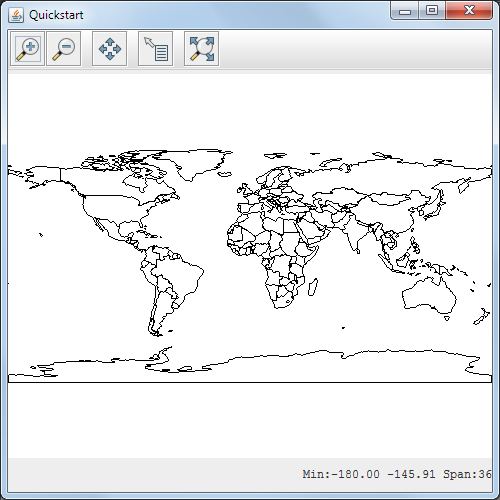

Maven Quickstart¶
Welcome¶
This tutorial is for those who prefer the pleasant company of a text editor and a trusty command prompt. Even if you routinely use an IDE, you will find that it’s often quicker and easier to compile, test and install your applications from the command line. We’ll be using Maven (http://maven.apache.org/) to manage the large number of jars that a GeoTools projects depend on. Don’t worry if you’re not familiar with Maven because we will explain everything step by step.
The example application is the same one used for the NetBeans and Eclipse Quickstart tutorials: a simple program to load and display a shapefile.
We would like thank members of the GeoTools User mailing list for their feedback while we were preparing the course material, with special thanks to Eva Shon for testing/reviewing early drafts. If you have any questions or comments about this tutorial, please post them to the user list.
Java Install¶
We are going to be making use of Java so if you don’t have a Java Development Kit (JDK) installed now is the time to do so.
Download the latest Java 7 JDK (Java SE Development Kit):
At the time of writing the latest Java 7 release was:
- jdk-7u67-windows-i586.exe
GeoTools is not yet tested with Java 8, we are limited by build infrastructure and volunteers.
Click through the installer you will need to set an acceptance a license agreement and so forth. By default this will install to:
C:\Program Files (x86)\Javajdk1.7.0_67
Note
In this tutorial we refer to file and directory paths as used by Windows. If you are fortunate enough to be using another operating system such as Linux or OSX all of the commands and source code below will work, just modify the paths to suit.
Maven (and why it’s not so bad)¶
Maven is a widely-used build tool which works by describing the contents of a project. This is a different approach than that used by the Make or Ant tools which list the steps required to build.
It takes a while to get used to Maven and, for some, it remains a love-hate relationship, but it definitely makes working with GeoTools much easier:
- You only download as much of GeoTools as your application requires.
- Jars are downloaded into a single location in your home directory (e.g. C:\Documents and Settings<user>\.m2\ on Windows). This is your local repository.
- The correct versions of all of the third-party jars required by GeoTools will be downloaded for you. This helps you to avoid obscure errors than can be caused by mis-matched dependencies which can be very difficult to track down.
- The single local repository makes it easier to work on other multiple open source projects.
Installing Maven¶
Download Maven from http://maven.apache.org/download.html
In this tutorial we refer to Maven version 3.2.3, we have had relatively little trouble with Maven version 3.
Unzip the file apache-maven-3.2.3-bin.zip
You need to have a couple of environmental variables set for maven to work. Navigate to Control Panel ‣ System ‣ Advanced. Change to the Advanced tab and click Environmental Variables button.
- JAVA_HOME =
C:\Program Files (x86)\Java\jdk1.7.0_67 - M2_HOME =
C:\java\apache-maven-3.2.3 - PATH =
%JAVA_HOME%\bin;%M2_HOME%\bin

- JAVA_HOME =
Open up a commands prompt Accessories ‣ Command Prompt
Type the following command to confirm you are set up correctly:
C:java> mvn --version
This should produce something similar to the following output:
C:\java>mvn -version Apache Maven 3.2.3 (33f8c3e1027c3ddde99d3cdebad2656a31e8fdf4; 2014-08-11T13:58:10-07:00) Maven home: C:\java\apache-maven-3.2.3 Java version: 1.7.0_67, vendor: Oracle Corporation Java home: C:\Program Files (x86)\Java\jdk1.7.0_67\jre Default locale: en_US, platform encoding: Cp1252 OS name: "windows 7", version: "6.1", arch: "x86", family: "windows"

Creating a new project¶
We can now create our project with:
C:>cd C:\java C:java> mvn archetype:create -DgroupId=org.geotools -DartifactId=tutorial
The above command creates the following files and directories:
tutorial tutorial\pom.xml tutorial\src tutorial\src\main tutorial\src\main\java tutorial\src\main\java\org tutorial\src\main\java\org\geotools tutorial\src\main\java\org\geotools\App.java tutorial\src\test tutorial\src\test\java tutorial\src\test\java\org tutorial\src\test\java\org\geotools tutorial\src\test\java\org\geotools\AppTest.java
App.java and AppTest.java are just placeholder files not used in this tutorial.
During the build process your local maven repository will be used to store both downloaded jars, and those you build locally.
Your local Maven repository is located in your home folder.
PLATFORM LOCAL REPOSITORY Windows XP: C:\Documents and Settings\You\.m2\repositoryWindows: C:\Users\You.m2\repositoryLinux and Mac: ~/.m2/repositoryOpen the pom.xml file in your favourite text editor. If your editor has an XML syntax mode switch into that now because it will make it a lot easier to find errors such as mis-matched brackets. Some editors, such as vim, will do this automatically on loading the file.
We are going to start by defining the version number of GeoTools we wish to use. This workbook was written for 13-SNAPSHOT although you may wish to try a different version.
For production a stable release is recommended:
<properties> <project.build.sourceEncoding>UTF-8</project.build.sourceEncoding> <geotools.version>12-RC1</geotools.version> </properties>
To make use of a nightly build set the geotools.version property to 13-SNAPSHOT .
<properties> <project.build.sourceEncoding>UTF-8</project.build.sourceEncoding> <!-- use the latest snapshot --> <geotools.version>13-SNAPSHOT</geotools.version> </properties>
We specify the following dependencies (GeoTools modules which your application will need):
<dependencies> <dependency> <groupId>junit</groupId> <artifactId>junit</artifactId> <version>4.11</version> <scope>test</scope> </dependency> <dependency> <groupId>org.geotools</groupId> <artifactId>gt-shapefile</artifactId> <version>${geotools.version}</version> </dependency> <dependency> <groupId>org.geotools</groupId> <artifactId>gt-swing</artifactId> <version>${geotools.version}</version> </dependency> </dependencies>
Finally, we tell maven which repositories to download jars from:
<repositories> <repository> <id>maven2-repository.dev.java.net</id> <name>Java.net repository</name> <url>http://download.java.net/maven/2</url> </repository> <repository> <id>osgeo</id> <name>Open Source Geospatial Foundation Repository</name> <url>http://download.osgeo.org/webdav/geotools/</url> </repository> </repositories>
If you are using a nightly build (such as 13-SNAPSHOT) and add a reference to the snapshot repository.
<repositories> <repository> <id>maven2-repository.dev.java.net</id> <name>Java.net repository</name> <url>http://download.java.net/maven/2</url> </repository> <repository> <id>osgeo</id> <name>Open Source Geospatial Foundation Repository</name> <url>http://download.osgeo.org/webdav/geotools/</url> </repository> <repository> <snapshots> <enabled>true</enabled> </snapshots> <id>boundless</id> <name>Boundless Maven Repository</name> <url>http://repo.boundlessgeo.com/main</url> </repository> </repositories>
Return to the command line and get maven to download the required jars for your project with this command:
C:\java\example> mvn install
If maven has trouble downloading any jar, you can always try again. A national mirror is often faster than the default maven central.
Creating the Quickstart application¶
Now we are ready to create the application.
Crete the org.geotools.tutorial.quickstart package by navigating to the directory
tutorialand create the directorysrc\main\java\org\geotools\tutorial\quickstartIn the new sub-directory, create a new file Quickstart.java using your text editor.
Fill in the following code:
package org.geotools.tutorial.quickstart; import java.io.File; import org.geotools.data.FileDataStore; import org.geotools.data.FileDataStoreFinder; import org.geotools.data.simple.SimpleFeatureSource; import org.geotools.map.FeatureLayer; import org.geotools.map.Layer; import org.geotools.map.MapContent; import org.geotools.styling.SLD; import org.geotools.styling.Style; import org.geotools.swing.JMapFrame; import org.geotools.swing.data.JFileDataStoreChooser; /** * Prompts the user for a shapefile and displays the contents on the screen in a map frame. * <p> * This is the GeoTools Quickstart application used in documentationa and tutorials. * */ public class Quickstart { /** * GeoTools Quickstart demo application. Prompts the user for a shapefile and displays its * contents on the screen in a map frame */ public static void main(String[] args) throws Exception { // display a data store file chooser dialog for shapefiles File file = JFileDataStoreChooser.showOpenFile("shp", null); if (file == null) { return; } FileDataStore store = FileDataStoreFinder.getDataStore(file); SimpleFeatureSource featureSource = store.getFeatureSource(); // Create a map content and add our shapefile to it MapContent map = new MapContent(); map.setTitle("Quickstart"); Style style = SLD.createSimpleStyle(featureSource.getSchema()); Layer layer = new FeatureLayer(featureSource, style); map.addLayer(layer); // Now display the map JMapFrame.showMap(map); } }
Go back to the top project directory (the one that contains your pom.xml file) and build the application with the command:
mvn clean install
Running the application¶
If you need some shapefiles to work with you will find a selection of data at the http://www.naturalearthdata.com/ project which is supported by the North American Cartographic Information Society. Head to the link below and download some cultural vectors. You can use the ‘Download all 50m cultural themes’ at top.
Unzip the above data into a location you can find easily such as the desktop.
You can run the application using Maven on the command line:
mvn exec:java -Dexec.mainClass=org.geotools.tutorial.quickstart.Quickstart
The application will connect to your shapefile, produce a map context, and display the shapefile.
A couple of things to note about the code example:
{kind=link}
- The shapefile is not loaded into memory. Instead it is read from disk each and every time it is needed. This approach allows you to work with data sets larger than available memory.
- We are using a very basic display style here that just shows feature outlines. In the examples that follow we will see how to specify more sophisticated styles.
Things to Try¶
Try out the different sample data sets.
You can zoom in, zoom out and show the full extent and use the info tool to examine individual countries in the sample countries.shp file.
Download the largest shapefile you can find and see how quickly it can be rendered. You should find that the very first time it will take a while as a spatial index is generated. After that rendering will become much faster.
Fast: We know that one of the ways people select a spatial library is based on speed. By design GeoTools does not load the above shapefile into memory (instead it streams it off of disk each time it is drawn using a spatial index to only bring the content required for display).
If you would like to ask GeoTools to cache the shapefile in memory try the following code:
/** * This method demonstrates using a memory-based cache to speed up the display (e.g. when * zooming in and out). * * There is just one line extra compared to the main method, where we create an instance of * CachingFeatureStore. */ public static void main(String[] args) throws Exception { // display a data store file chooser dialog for shapefiles File file = JFileDataStoreChooser.showOpenFile("shp", null); if (file == null) { return; } FileDataStore store = FileDataStoreFinder.getDataStore(file); SimpleFeatureSource featureSource = store.getFeatureSource(); // CachingFeatureSource is deprecated as experimental (not yet production ready) CachingFeatureSource cache = new CachingFeatureSource(featureSource); // Create a map content and add our shapefile to it MapContent map = new MapContent(); map.setTitle("Using cached features"); Style style = SLD.createSimpleStyle(featureSource.getSchema()); Layer layer = new FeatureLayer(cache, style); map.addLayer(layer); // Now display the map JMapFrame.showMap(map); }
You will also need to add this import statement:
import org.geotools.data.CachingFeatureSource;
Hint
When working in a text editor instead of an IDE use the GeoTools javadocs to work out what import statements are required in your source. The javadocs also list the GeoTools module in which each class is found.
Note
When building you may see a message that CachingFeatureSource is deprecated. It’s ok to ignore it, it’s just a warning. The class is still under test but usable.
- Try and sort out what all the different “side car” files are - and what they are for. The sample data set includes “shp”, “dbf” and “shx”. How many other side car files are there?
- Advanced: The use of FileDataStoreFinder allows us to work easily with files. The other way to do things is with a map of connection parameters. This techniques gives us a little more control over how we work with a shapefile and also allows us to connect to databases and web feature servers.
File file = JFileDataStoreChooser.showOpenFile("shp", null);
Map<String,Object> params = new HashMap<String,Object>();
params.put( "url", file.toURI().toURL() );
params.put( "create spatial index", false );
params.put( "memory mapped buffer", false );
params.put( "charset", "ISO-8859-1" );
DataStore store = DataStoreFinder.getDataStore( params );
SimpleFeatureSource featureSource = store.getFeatureSource( store.getTypeNames()[0] );
So what jars did maven actually use for the Quickstart application? Try the following on the command line:
mvn dependency:tree
We will be making use of some of the project in greater depth in the remaining tutorials.